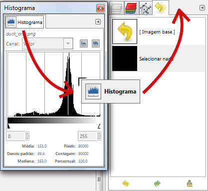
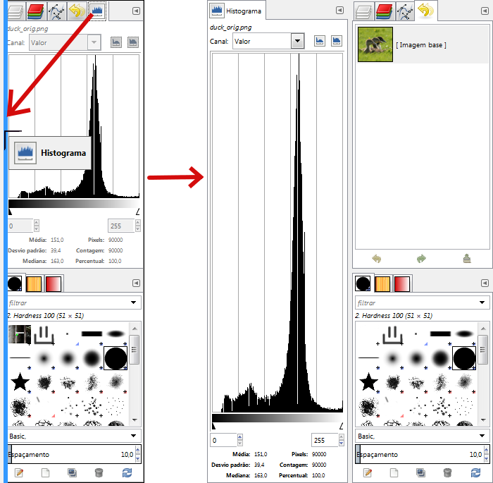

O GIMP tem grande flexibilidade para organização de diálogos na tela. Um “diálogo” é uma janela móvel que contém opções para uma ferramenta ou é dedicado a uma tarefa particular. Um “encaixe” é um recipiente que pode conter uma coleção de diálogos persistentes, como a caixa de diálogo Opções de ferramentas, o diálogo de Pincel, o diálogo de Paletas, etc... Encaixes não podem, no entanto, manter diálogos não persistentes, tais como os diálogo de preferências, uma janela de imagem ou as opções de um filtro.
O GIMP tem três encaixes padrão:
-
O diálogo de “Opções de ferramenta” no encaixe sob a Caixa de ferramentas, no painel esquerdo,
-
os diálogos Pincéis, Texturas e Degradês na parte inferior do painel direito,
-
O encaixe para Camadas, Canais, Caminhos e Desfazer na parte superior do painel direito,
Nesses encaixes, cada diálogo está em sua própria guia.
No modo de multi-janela , a caixa de ferramentas é uma janela de utilidades e não um encaixe. Na modo de janela única, ela pertence a única janela.
Use → para ver uma lista de diálogos encaixáveis. Selecione um diálogo de encaixe da lista para exibir o diálogo. Se o diálogo está disponível em um encaixe, então ele se torna visível. Se o diálogo não está em um encaixe, o comportamento é diferente nos modos de janela multi e único:
-
No modo de janelas multiplas, uma nova janela contendo cada diálogo aparece na tela.
-
Na modo de janela única, o diálogo é automaticamente acoplado ao encaixe onde estão os diálogos deCamadas/Canais/.../Desfazer como uma guia.
Você pode clicar e arrastar uma guia e soltá-la no local desejado:
-
ou na barra de guias de um encaixe, para integrá-lo ao grupo de diálogos ali,
-
ou em uma barra de encaixe que aparece como uma linha azul quando o ponteiro do mouse passa sobre uma borda do encaixe, para conectar o diálogo ao encaixe.
No modo de janelas múltiplas, você também pode clicar no título de diálogo e arrasta-lo para o local desejado.
Figura 3.6. A integração de um novo diálogo a um grupo de diálogos

Aqui, na modo de multi janelas, o diálogo Histograma foi arrastado para a barra de guias do encaixe de Camadas/.../Desfazer.
Mais simples: o comando Adicionar aba no menu das Guias de encaixe Seção 2.3.2, “Menu das Abas (guias)”.
Figura 3.7. Encaixando um diálogo em uma borda encaixável

O diálogo Histograma arrastado para a barra de encaixe vertical a esquerda do painel da direita e o resultado: o diálogo encaixado na borda esquerda do painel direito. Este diálogo agora pertence ao painel da direita.
Assim, você pode organizar diálogos em uma exibição de multiplas colunas interessante, se você trabalha com duas telas: uma para os diálogos, o outra para imagens.
![[Dica]](images/tip.png)
|
Dica |
|---|---|
|
Pressione TAB em uma janela de imagem para alternar a visibilidade dos encaixes. Isso é útil se os encaixes escondem uma parte da janela da imagem. Você pode ocultar rapidamente todos os encaixes, fazer o seu trabalho, em seguida, apresentar todos as imagens novamente. Pressione TAB dentro de um diálogo para navegar através do mesmo. |
In each dialog, you can access a special menu of tab-related operations by
pressing the Tab Menu button
 .
The exact commands shown in the menu depend on the active dialog, but
they always include operations for creating new tabs, closing or
detaching tabs.
.
The exact commands shown in the menu depend on the active dialog, but
they always include operations for creating new tabs, closing or
detaching tabs.


O menu de Guias fornece a você acesso aos seguintes comandos:
- Menu de contexto
-
No topo de cada menu de Guia, uma entrada abre o menu de contexto do diálogo ativo naquele grupo, que contém operações específicas para esse tipo de diálogo. Por exemplo, o menu de contexto da guia Camadas é o Menu de Camadas, que contém um conjunto de operações para manipulação de camadas. O mesmo menu de contexto pode ser aberto clicando-se com o botão direito do mouse dentro do diálogo.
- Adicionar guia
-
Adicionar aba abre um submenu permitindo você adicionar uma grande variedade de diálogos encaixáveis como novas guias.
- Fechar aba
-
Close the dockable dialog. Closing the last dialog in a dock causes the dock itself to close.
- Desacoplar aba
-
Separa o diálogo do encaixe, criando um novo encaixe com o diálogo destacado como seu único membro. Tem o mesmo efeito que arrastar a guia para fora do encaixe e liberá-lo em um local onde não possa ser encaixado.
É uma maneira paradoxal de se criar janelas adicionais mesmo no modo de janela única!
Se a guia está bloqueada, este item de menu é insensível e cinzento.
- Bloquear aba na janela de encaixe
-
Evita que o diálogo seja movido ou desencaixado. Quando ativado, a opção fica insensível e cinzenta para este diálogo.
- Tamanho da pré-visualização
-
Many, but not all, dialogs have Tab menus containing a Preview Size option, which opens a submenu giving a list of sizes for the items in the dialog, from small to large. For example, the Brushes dialog shows pictures of all available brushes: the Preview Size determines how large the pictures are. The default is Medium size.
- Estilo da guia
-
Tab Style opens a submenu allowing you to choose the appearance of the tabs at the top. There are five choices, but not all are enabled for every dialog:
- Ícone
-
Usar apenas um ícone para representar o tipo de diálogo.
- Estado atual
-
Só está disponível para diálogos que permitem que você selecione alguma coisa, como um, pincel, textura, degradê, etc Estado atual mostra uma representação do item selecionado na parte superior da guia.
- Texto
-
Usar um texto para mostrar o tipo de dialogo
- Icone e texto
-
Usar um ícone e texto resulta em abas mais largas.
- Estado e texto
-
Mostra o item selecionado e texto com o tipo de diálogo.
- View as List, Visualizar como grade
-
Estas entradas são mostradas nas caixas de diálogo que permitem que você selecione um item de um conjunto: pincéis, texturas, fontes, etc... Você pode escolher exibir os itens como uma lista vertical, com o nome ao lado de cada item, ou como uma grade, com representações dos itens, mas não seus nomes. Cada um tem suas vantagens: ver como uma lista lhe dá mais informações, mas ver como uma grade permite que você veja mais possibilidades de uma só vez. O padrão para este varia de acordo com o diálogo: para pincéis e texturas, o padrão é uma grade, para maioria das outras coisas, o padrão é uma lista.
Quando visualização está no modo Ver como lista, você pode usar Tags. Por favor, veja Seção 3.7, “Rotulando”.
Você também pode usar um campo de pesquisa na lista:
Figura 3.10. Campo de pesquisa na lista

Press Ctrl+F to open the list search field, displayed at the bottom. An item must be selected for this command to be effective.
O campo de pesquisa na lista fecha automaticamente depois de cinco segundos, se você não fizer nada.
![[Nota]](images/note.png)
Nota O atalho campo de pesquisa também está disponível para a visualização em árvore que você tem nas opções de “Pincel”, “Fonte”, “Degradê” ou “Textura” de várias ferramentas.
- Exibir barra de botões
-
Algumas caixas de diálogo exibem uma barra de botões na parte inferior da caixa de diálogo, por exemplo os diálogos de Texturas, Pincéis, Degradês e Imagens. Esta opção do menu é selecionável: se estiver marcada, então a barra de botões é exibida.
- Exibir seleção de imagem
-
This option is available in multi-window mode only. This is a toggle. If it is checked, then the active image is shown at the top of the dock:
It is not available for dialogs docked below the Toolbox. This option is interesting only if you have several open images on your screen. - Acompanhar imagem ativa
-
Esta opção está disponível apenas no modo de múltiplas janelas. Ela também só é interessante se você tiver várias imagens abertas em sua tela. Se Seguir automaticamente a imagem ativa estiver desligado, as informações exibidas em um encaixe são sempre da imagem selecionada na lista flutuante de Seleção de imagens. Se a opção estiver ativada, você também pode selecioná-la, ativando a imagem diretamente (clicando em sua barra de título).
- Esconder
-
The option is an experimental functionality to choose a different display.